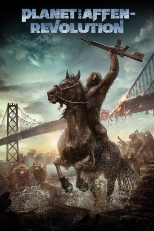

#4926 Planet der Affen: Revolution
Alternativ: Dawn of the Planet of the Apes
Auszeichnungen: für 1 Oscars nominiert
 
 IMDB-Wertung: 7.6 / 10
IMDB-Wertung: 7.6 / 10  Metascore: 0
Metascore: 0 
Nachdem durch die randalierenden und genetisch veränderten Affen und den ausgebrochenen Virus die Weltbevölkerung drastisch reduziert wurde, versuchen einige wenige Überlebende ihr Dasein in San Francisco zu fristen. Aber auch bei den Affen ergeben sich Probleme. Der Anführer Caesar muss seine Machtposition in den eigenen Rängen behaupten. Mittlerweile hat er selbst eine Frau und ein Baby. Seinen Artgenossen hat er mittlerweile beigebracht, sich mithilfe einer Zeichenspracheuntereinander zu verständigen. Alles deutet darauf hin, dass der Waffenstillstand zwischen Affen und den überlebenden Menschen nicht von Dauer sein wird. Bald schon wird sich entscheiden, welche der beiden Spezies die Erde in Zukunft dominieren wird.
Jahr: 2014
Dauer: 130 Minuten
FSK: 12
Land: USA Studio: 20th Century FoxTonspuren:
Untertitel: Deutsch,
Auflösung: 1080p (1920x1040) Größe: 10854 MB
Genre: Action, Drama, Sci-Fi, Abenteuer
Regisseur: Matt Reeves
Drehbuch: Mark Herman
Soundtrack:
Darsteller:
 Andy Serkis als Caesar
Andy Serkis als Caesar Jason Clarke als Malcolm
Jason Clarke als Malcolm Gary Oldman als Dreyfus
Gary Oldman als Dreyfus Keri Russell als Ellie
Keri Russell als Ellie Toby Kebbell als Koba
Toby Kebbell als Koba Kodi Smit-McPhee als Alexander
Kodi Smit-McPhee als Alexander Kirk Acevedo als Carver
Kirk Acevedo als Carver- Nick Thurston als Blue Eyes
 Terry Notary als Rocket
Terry Notary als Rocket Karin Konoval als Maurice
Karin Konoval als Maurice Judy Greer als Cornelia
Judy Greer als Cornelia Jon Eyez als Foster
Jon Eyez als Foster Enrique Murciano als Kemp
Enrique Murciano als Kemp- Larramie Doc Shaw als Ash
 Lee Ross als Grey
Lee Ross als Grey- Keir O'Donnell als Finney
- Kevin Rankin als McVeigh
- Jocko Sims als Werner
 Al Vicente als Manone
Al Vicente als Manone- Matthew James als Man 2
- Richard King als Stone
- Scott Lang als Luca
 Deneen Tyler als Woman
Deneen Tyler als Woman- Mustafa Harris als Officer
 Lombardo Boyar als Terry
Lombardo Boyar als Terry Mike Seal als Driver
Mike Seal als Driver J.D. Evermore als Sniper
J.D. Evermore als Sniper Michael Papajohn als Cannon-Gunner
Michael Papajohn als Cannon-Gunner Thomas Rosales Jr. als Old Man
Thomas Rosales Jr. als Old Man Carol Sutton als Old Woman
Carol Sutton als Old Woman Christopher Berry als Gun-Clinching Man
Christopher Berry als Gun-Clinching Man- Andrea Vittoria Alvarado als Human Colony Prisoner , uncredited
 John L. Armijo als Dreyfus' Officer , uncredited
John L. Armijo als Dreyfus' Officer , uncredited Jon Arthur als Armed Sentry / Dreyfus Officer , uncredited
Jon Arthur als Armed Sentry / Dreyfus Officer , uncredited- Blake Nelson Boyd als Human Colony Survivor , uncredited
- Joe Bravo als City Hall Colonist , uncredited
 Hélène Cardona als Newscaster , uncredited
Hélène Cardona als Newscaster , uncredited- Kurt Cotton als Colony Survivor , uncredited
- Steve D'Assis als Survivor , uncredited
- Jesse N. Davis als Armed Human Colonist , uncredited
- Santana Draper als Human Colony Member , uncredited
 Diana Durango als Colonist , uncredited
Diana Durango als Colonist , uncredited- Jazzy Ellis als Human Colony , uncredited
 Geraldine Glenn als Human Colonist , uncredited
Geraldine Glenn als Human Colonist , uncredited- Lucky Johnson als Rationer , uncredited
- Allyson Leigh Jordan als Human Colonist , uncredited
 Sergio Kato als Colony Survivor , uncredited
Sergio Kato als Colony Survivor , uncredited Angela Kerecz als Captured Human , uncredited
Angela Kerecz als Captured Human , uncredited- Bobby Kerecz als Captured Human , uncredited
- Anthony A. Kung als Colony Member , uncredited
Datei: X:\7+mehr(A-Z)\Planet der Affen\Planet der Affen Revolution (2014, FSK12, 1920x1040).mkv seit 02.12.2016
Festplatte: HD Collection-7+mehr(A-Z)+Person
 Es gibt insgesamt 14 Filme in der Gruppe '7+mehr(A-Z)\Planet der Affen'
Es gibt insgesamt 14 Filme in der Gruppe '7+mehr(A-Z)\Planet der Affen'